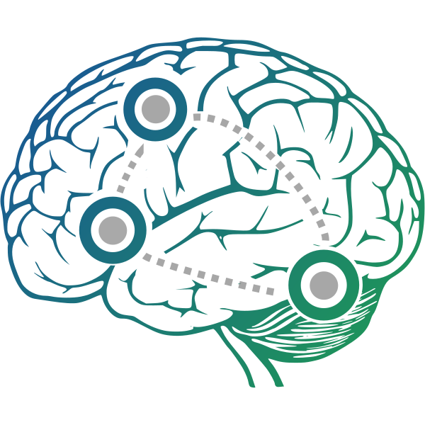

I am an EE PhD candidate at Tandon School of Engineering of New York University, supervised by Prof. Yao Wang and cosupervised by Prof. Yvonne W. Lui. I am a data scientist, doing image, video, and language processing with machine/deep learning. I also prepared myself for AI, big data, and GPU programming, which I think matter.
On this site, you can find some of my projects. Hope you enjoy :)
Selected Projects
| Biophysically interpretable neural network design | |
|---|---|
|  |
Classical neural network focuses on performance of specific tasks, such as classification, detection, and recognition. The physical meaning of the internal structure of the neural networks is not of concern. Using neural networks as a tool of revealing the working mechanism of brain, we emphasize on its biophysical meaning, besides its ability of reproducing observed bio-signals. Rather than manipulating standard neural net models and then trying to load them with biophysical meaning, we customize neural network from scratch based on the previous most advanced biophysical model, Dynamic Causal Modeling (DCM). We propose a generalized RNN (GRNN) and show that DCM can be cast as a specific GRNN. The new DCM-RNN extends DCM with a more flexible framework, new estimation methods, and neural network compatibility. In functional MRI (fMRI) experiments, DCM-RNN is shown to achieve more accurate causal architecture estimation and has more capacity of discovering simpler models among possible candidates than the classical DCM. |
| Closed caption based TV news segmentation using deep learning | |
|
|
It is a summer internship project at AT&T. AT&T is marching towards media content service. As a result, it becomes critical for AT&T to provide its costumers with great multimedia experience. We think video program segmentation is fundamental for video curation, video personalization, targeted advertising, etc. In the summer, we focus on closed caption based TV news program segmentation. New deep learning framework is proposed. |
| Functional MRI classification with deep learning | |

|
It is an ongoing project. Recently, the Human Connectome Project (HCP) released the S1200 data set, which contains fMRI scans for 1,200 subjects, 1+ hour per subject. It will enable numerous exciting deep learning researches for clinical tasks. FMRI is very high volume 4D data, 3D for spacial and 1D for temporal which makes classifier training hard, especially with limited samples. We are try to train short-size-representation learning network using the S1200 data set, auto-encoder for spacial and RNN for temporal. The trained network then can be used for other data set for various fMRI problems. |
| Neural painting | |
|
|
It's a course project I advised. Two brilliant and passionated master students at NYU, Megan Hardy and Sumanto Pal, start their adventure of image processing and deep learning. Different objects of a painting typically have distinctively different styles i.e. textures and color compositions while previous neural painting works abstract a global style from a painting and apply it onto a whole photo. In this project, we separate objects of interest in both the painting and the real content photo and apply an art style only to the corresponding objects. For example, abstract style from a flower in a painting and apply it onto a flower in a real content photo. It creates unique aesthetic experiences. |
| Reference graph | |
|
|
Researcher do a lot of literature survey, which is always a pain, pain, in the sense that it is hard to get the 'big picture' of a field facing the endless and messy papers. There should be auto tools allowing people to find out the most influential works and see how the studies of a field evolves along time. However I cannot find myself a satisfactory one and I decided to make one myself. The main functionality of this tool includes:
|
Other Projects
- People tracking and clustering in fisheye video
- A new fixed-dictionary baseline for compressive sensing MRI reconstruction
- Gesture Recognition Based on Cell Phone In-Built MEMS Devices
- Integrant Sphere Display Bright Room Contrast Measurement System
- Traffic Light Recognition System for Color-blind People